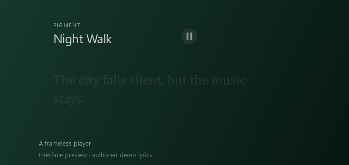

Your apps, a little closer.
Magnifying icons, pinned apps and running windows. Scroll when the dock fills up, change its icons, and find installed apps through Pigment’s Start menu.
Production dock renderer with staged icons.
For Windows 11 · Free beta
A wave dock, a new way to find your windows, desktop widgets and a terminal in your colors. Pick the parts that fit how you use your PC.
Windows 11 x64 · English & Russian
The everyday desktop, your way
Find an app. Switch windows. Change the atmosphere. Pigment brings these pieces together, and lets you choose what to turn on.
Magnifying icons, pinned apps and running windows. Scroll when the dock fills up, change its icons, and find installed apps through Pigment’s Start menu.
Production dock renderer with staged icons.
Open a window board with live thumbnails. Pan around, zoom into a window, and return to the overview when you need the bigger picture.
Board preview with staged thumbnails.
A glowing globe with windows, apps, settings and files on one side, optional web results on the other, and a calculator above.
Animated globe renderer preview.
Search interface with demo results.
Clocks, a calendar, glass surfaces and display-specific placement. Start with Glass, Quiet or Music, then adjust the pieces to suit your setup.
Staged desktop composition with demo content.
Keep using ordinary Windows Terminal, with wallpaper colors, blur and transparency. Add a rotating ASCII logo, Matrix rain, audio bars or a bass wave.
neofetchcmatrixcavavisIllustrative terminal styling preview.
Desktop media controls, lyrics and visualizers for Windows system audio. Choose line transitions or word reveal, import your own LRC, and adjust timing for each track.

Authored demo lyrics. Ordinary LRC uses approximate word timing; exact timestamps are used when available.
Watch the music presetBrowse wallpapers, filter by color and let their palette shape your desktop and terminal. Use static wallpapers or connect Wallpaper Engine for live ones. The forest scene is just one setup.
Built-in wallpaper library. Select a wallpaper or narrow it down by color.
A closer look
23 examples across the desktop, search, terminal and music tools. Browse actual app captures, different wallpaper palettes and labeled renderer previews. Open an image to see the details.
23 examples
Settings captures, renderer previews and an actual desktop recording. Demo content is labeled. Gallery artwork and wallpaper credits: credits & licenses.
Try it your way
Choose a wallpaper, try the Quiet style and keep the widgets you need. Use the dock to reach your apps.
See desktop optionsPress Win + Tab for the window board, or Ctrl + Alt + Space to find an app, file or setting through the globe.
See globe searchRun music in the terminal for a listening layout. Adjust lyrics timing, import an LRC, or use the visualizers on their own.
One way to use Pigment
This 24-second recording shows the music preset on one forest wallpaper. Run music to arrange ordinary Windows Terminal windows around the player, and music off when you’re done.
You can use the dock, window overview, search and widgets without this preset.
Start with your own desktop
Pigment is free and still in beta. Try the tools that interest you, and tell us what needs work.
0.1.5 beta · Windows 11 x64Choose the installer for a regular setup, or portable to run it from a folder.
Download installer 90 MB · .exeDownload portable 90 MB · .zipThe installer is unsigned and experimental. Windows may show a security warning. A clean install, update and uninstall cycle has not yet been verified.
Before you install
No. The dock, widgets and terminal work with static wallpapers. Live wallpaper features need Wallpaper Engine. The forest wallpaper in the video is a separate Workshop wallpaper.
Exact word timestamps are used when available. For ordinary LRC with line timestamps, word reveal is approximate. You can change the reveal mode and set a timing offset for each track. Some tracks have no available lyrics.
Use Updates inside Pigment to check for a release and update with one button. Nothing is downloaded or installed until you press Update. You can also download a newer build here.
The installer offers to restore backed-up appearance settings and preserves your Pigment settings. If restoration fails, removal stops and produces a report. The full process still needs testing on clean Windows systems. Read the installer notes.
Report a bug or suggest a feature. Include your Windows version, monitor setup and the steps that led to the issue. Screenshots are helpful; remove private information before sharing.